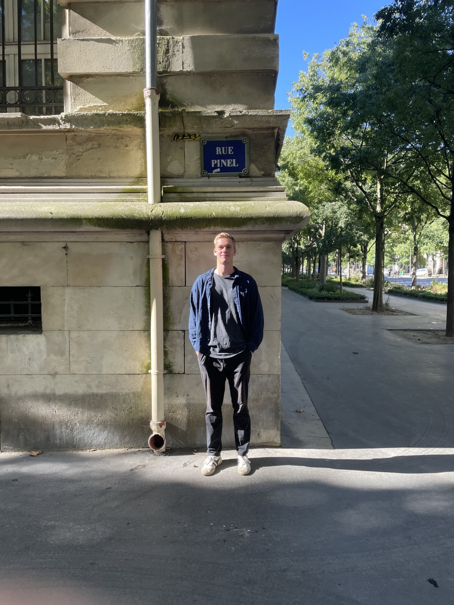

Graduate Student University of Calgary

I am a (theoretical)-computer scientist interested in the mathematical foundations of learning algorithms and their applications in neuroscience and medical imaging.